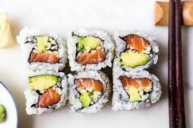

Salmon Avocado Roll

Description
This is a tried and true classic maki, or roll. Crispy, savory nori wraps fluffy, slightly pungent vinegared rice, with fresh slices of salmon and avocado tucked inside.
Ingredients
- Fresh Salmon
- Fresh Avocado
- Sushi Rice
- Rice Vinegar
- Sugar
- Nori Sheets
Steps
- Prepare rice by boiling, adding vinegar and sugar
- Lay out a sheet of nori
- Add and flatten a thin layer of rice to the top side of the nori, covering half of the sheet
- Place salmon chunks in a line along the length of the sheet
- Place avocado chunks alongside the salmon in another thin line
- Roll that badboy up, sealing the nori with tap water